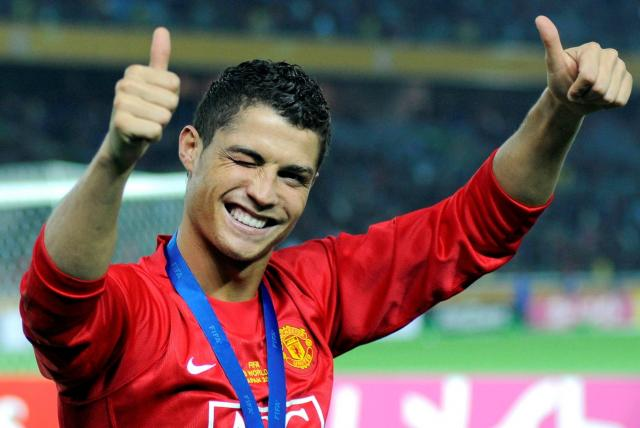

Cristiano Ronaldo
Cristiano Ronaldo dos Santos Aveiro (pronunciación en portugués: /kɾiʃˈtiɐnu ʁuˈnaɫdu/; Funchal, Madeira; 5 de febrero de 1985), más conocido como Cristiano Ronaldo o CR7, es un futbolista portugués que juega como delantero en el Manchester United Football Club de la Premier League de Inglaterra y en la selección de Portugal, de la cual es su capitán y máximo goleador histórico.
Identificado habitualmente en los medios de comunicación con el numerónimo CR7, es considerado con frecuencia el mejor y más completo futbolista y goleador del mundo y uno de los mejores de todos los tiempos, por un elevado número de personas y prensa vinculadas al deporte,así como también una de las figuras más mediáticas de su generación. Es, con 807 goles, el máximo goleador en la historia del fútbol profesional, y con 450, el máximo goleador histórico del Real Madrid Club de Fútbol,consiguiéndolo en las nueve temporadas que jugó en este club. Es además, según los portales expertos en estadísticas históricas de Rec.Sport.Soccer Statistics Foundation (RSSSF) y Federación Internacional de Historia y Estadística de Fútbol (IFFHS), el tercer máximo goleador en los campeonatos de Primera División de Europa, con 491 goles —mismo registro a nivel mundial—. Los datos son reconocidos por la UEFA y la FIFA.

A lo largo de su carrera profesional, ha conseguido batir diversos récords. Entre ellos, se destacan ser el primer jugador que consiguió ganar cuatro Botas de Oro, ser el segundo futbolista en la historia que más veces ha ganado el Balón de Oro (con cinco) —tres Balones de Oro y dos FIFA Balones de Oro—, ser el primero en ganar el premio The Best de la FIFA al mejor jugador del mundo —y el que más lo ha logrado con dos junto a Robert Lewandowski—, ser el máximo goleador histórico de la selección portuguesa (115), el máximo goleador mundial a nivel de selecciones, y ser el máximo goleador histórico de la Liga de Campeones (141) contando la fase previa, competición en la que también posee las marcas de más goles en una edición del torneo —17 goles en 11 partidos (2013-14)—, de más goles en una fase de grupos del torneo —11 goles en seis partidos (2015-16)— y de más veces máximo goleador del torneo con seis ediciones. Es, además, el madridista que menos partidos necesitó (92) para alcanzar los cien goles en el campeonato nacional de Liga, el primer futbolista en la historia de la competición que consiguió marcarle a todos los equipos a los que se enfrentó en una temporada, el único futbolista capaz de marcar en seis Clásicos consecutivos, o el único en anotar en seis visitas consecutivas al Camp Nou, estadio de máxima rivalidad para los blancos.
Su consagración como futbolista de élite se dio en su etapa en el Manchester United Football Club, donde tras conquistar tres Premier League, dos EFL Cup, una FA Cup, dos Community Shield, una Liga de Campeones y una Copa Mundial de Clubes, fue galardonado con el Balón de Oro, el FIFA World Player, y la Bota de Oro, trofeos que le acreditaban como mejor futbolista del mundo a fecha de 2008.
Tras protagonizar el traspaso más caro en la historia del fútbol en su momento,recaló en el Real Madrid Club de Fútbol, donde mejoró como futbolista llegando a sus más altos registros en juego y goles. En el club español fue el primer jugador en superar la histórica cifra de treinta y ocho goles en una temporada de Liga, situando la nueva marca en cuarenta goles,registro que le sirvió para ganar su segunda Bota de Oro en el 2011. Conquistó como madridista dos Copas del Rey,dos Ligas, y dos Supercopas de España, completando así la triple corona española, más cuatro Ligas de Campeones, tres Supercopas de Europa y tres Copas Mundiales de Clubes. Sus actuaciones le llevaron a conquistar otros cuatro Balones de Oro —en 2013, 2014, 2016 y 2017— y otras dos Botas de oro —en 2014 y 2015— y a situarse entre los tres mejores jugadores del mundo durante ocho temporadas. Es el jugador que más veces ha ganado el Premio UEFA al Mejor Jugador en Europa, con tres títulos.

Internacional absoluto con la selección portuguesa desde 2003,47 ha disputado cinco Eurocopas, cuatro Mundiales, una Copa Confederaciones y dos Ligas de Naciones, en donde sus máximos logros fueron las conquistas de los títulos en la Eurocopa de 2016 y en la Liga de Naciones 2018-19.En cuanto a la Copa Mundial y a la Copa Confederaciones, un cuarto lugar en Alemania 2006 y un tercer lugar en Rusia 2017 respectivamente, fueron sus mejores actuaciones. Es uno de los jugadores miembro del FIFA Century Club, formado por aquellos futbolistas con más de cien internacionalidades con su selección. Sus 185 partidos le colocan tercero en el listado a fecha de 2022 —el que más ha disputado de la historia de Portugal— y primero a nivel UEFA.
El 14 de diciembre de 2020 fue incluido como extremo izquierdo en el Dream Team histórico del Balón De Oro49 y el 27 de diciembre del mismo año fue elegido como el mejor Jugador del Siglo xxi.
Desde 2014, es Gran Oficial de la Orden del Infante Don Enrique, uno de los máximos reconocimientos otorgados en Portugal, por su prestación de servicios relevantes otorgados a su país, así como su expansión cultural, histórica y de valores.
En el 2020, tuvo 105 millones de dólares, convirtiéndolo en el primer billonario del Fútbol
En el 2021 tuvo $ 120 millones.